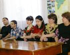

СТАНОВЛЕНИЕ НПО В НАГОРНОМ КАРАБАХЕ:
ПРОБЛЕМЫ, ДОСТИЖЕНИЯ, ПЕРСПЕКТИВЫ

ПОСТКОНФЛИКТНОЕ ОБЩЕСТВО
В современном мире от таких факторов, как степень развитости гражданского общества, эффективность взаимодействия институтов государства и общества зависят темпы социально-экономического роста, нравственно-психологическое и материальное состояние граждан, государства и общества в целом. Какова ситуация в данном плане в Нагорном Карабахе?
70 лет советской власти, война, послевоенный синдром и практически продолжающееся военное положение стали серьезным препятствием для построения открытого демократического общества. Постконфликтное общество прежде всего отличается незалеченными ранами, комплексом нерешенных социально-экономических, бытовых и др. проблем широких слоев населения. Все это накладывает отпечаток на сознание, общественную позицию граждан.
Безусловно, без внутренней стабильности и гражданского согласия в государстве, без решения внутренних конфликтов невозможно решение внешних, межгосударственных конфликтов. В данном плане важно согласие между различными слоями и категориями населения, национальных, религиозных и других меньшинств. На «иноверца» не должна обрушиваться мощь государственного аппарата, бывшие военнопленные не должны чувствовать себя изгоями, заключенные должны перевоспитываться, а не ломаться или, наоборот, еще больше ожесточаться, молодежь должна быть обеспечена полезным и интересным досугом, подрастающее поколение должно воспитываться на морально-нравственных ценностях, в духе толерантности и быть уверенным в безопасном будущем без войн и др. Именно на достижение этих целей направлена деятельность представленных на конференции и других действующих в Нагорном Карабахе НПО.
НПО И ВЛАСТИ
Законодательная база Нагорного Карабаха, по оценкам экспертов, действительно позволяет как организациям, так и отдельным гражданам осуществлять достаточно полноценную общественную деятельность. Уже приняты законы об общественых организациях, о профсоюзах, об общественном телевидении, о СМИ и др. В вопросе регистрации общественной организации в Нагорном Карабахе проблем не существует, власти не препятствуют становлению и развитию неправительственного сектора.
Важным моментом развития неправительственного сектора является его умение работать с властями. Взаимодействуя с органами власти, НПО должны стремиться к признанию неправительственного сектора как серьезной силы и ресурса для обеспечения социальной стабильности и благополучия в обществе; решению проблем, препятствующих и сдерживающих дальнейшее развитие НПО; обеспечению реального эффективного сотрудничества на всех уровнях власти и НПО в интересах общества. При этом мотивацией сотрудничества для НПО должно быть повышение результативности собственной деятельности для реализации выбранной миссии. Через взаимодействие обеспечивается общественный контроль за работой власти, осуществляется системное влияние на власть, на принимаемые властью решения в интересах общества.
В свою очередь для власти сотрудничество с НПО – это более четкая ориентация в работе на потребности общества, расширение ресурсов, повышение эффективности работы, установление каналов обратной связи, получение доверия и поддержки в обществе. Безусловным стимулом и надеждой для карабахских НПО стало принятое в 2005 году решение правительства НКР, которым в госбюджет нынешнего года была заложена сумма для поддержки деятельности общественных организаций. Причем, впервые оно предусматривало выделение бюджетных средств на конкретные программы на основе конкурсного отбора. Специальная комиссия, куда вошли и лидеры гражданского общества, согласно утвержденному порядку будет выбирать проекты для финансирования со стороны государства. Также следует отметить, что при министерстве культуры, образования, по делам молодежи и спорта существует совет молодежных НПО, куда входят 11 организаций. На сегодняшний день совет разрабатывает проект закона о молодежи.
Сотрудничество с властью можно считать качественно новым этапом в развитии неправительственных организаций и в последнее время государство уделяет все больше внимания неправительственному сектору. Правда, многие НПО пока не готовы к такому сотрудничеству. Нередко не хватает профессиональных навыков, системности в работе. Кто-то отказывается от сотрудничества, считая, что власть нужно контролировать, находясь на расстоянии. Тем временем, существует масса жизненно важных проблем, которые нужно решать на основе партнерства власти и общества, и от деклараций партнерства мы должны переходить в рабочий режим. Формой сотрудничества могут стать совместные мероприятия (конференции, семинары, круглые столы), консультативно-совещательные органы в виде советов, комиссий, постоянно-действующих совещаний, временные рабочие группы по проектам законов, по формированию государственных, отраслевых, территориальных программ, проведение общественных слушаний по социально значимым проблемам и др.
Конечно, многое зависит и от готовности власти сотрудничать с НПО на равных и беспристрастно, от стремления к максимальной реализации имеющейся законодательной основы для взаимодействия, преодоления стереотипов и штампов в органах власти в отношении структур гражданского общества. Но в любом случае инициатива в части обсуждения насущных проблем должна исходить от НПО. А это требует не только обозначения проблемы, но и ее анализа, предложения по решению. В итоге же плодотворного сотрудничества в органах власти сформируется уважительное отношение к общественному мнению, к общественным интересам, на практике будет реализован принцип: первичны интересы общества, а власть их обслуживает. Многое из вышесказанного в Нагорном Карабахе постепенно претворяется в жизнь, во всяком случае делаются первые шаги отказаться от формализма, шаблонов, стереотипов в работе, заказов «сверху» и др. При этом следует отметить, что в юридически непризнанных республиках, и в частности, в Нагорном Карабахе, вопрос взаимоотношений властей и неправительственного сектора более осложнен, в частности, потому что нередко критика воспринимается как попытка раскола общества.
НПО должны вмешиваться в политику, в хорошем и широком смысле этого слова. Оставаясь в своей ипостаси, неправительственный сектор должен принимать участие в решении важных общественно-политических задач как на муниципиальном, так и на национальном уровне - в форме лоббинга, образовательной работы, участия в политических партиях и т.д., хорошо разбираться в политике, знать политический контекст и субтекст своей деятельности. От этого выиграют и власти, и третий сектор, а также общество в целом - в плане развития демократических институтов.
Проблемой некоторых НПО является то, что они работают автономно, не используя предоставляемые возможности через систему консолидации, ассоциирования, развитие партнерских связей между собой. Ввиду того, что отсутствие финансов является одной из главных проблем НПО, последние должны иметь также возможность заниматься коммерческой деятельностью - для того, чтобы третий сектор приобрел большую независимость и самостоятельность. Увы, с сожалением приходится констатировать, что деятельность подавляющего большинства карабахских НПО напрямую зависит от внешних спонсоров, будь то государство, или иностранные спонсоры.
НПО И МЕЖДУНАРОДНЫЕ ОРГАНИЗАЦИИ
Несмотря на то, что на сегодняшний день правовое поле НКР не создает препятствий для развития общественных организаций, развитие неправительственного сектора проходит достаточно медленно. У нас зарегистрировано 107 общественных организаций. Однако многие из них практически не действуют, ссылаясь на отсутствие финансов, возможностей выхода в мир и налаживания партнерских связей.
НПО Нагорного Карабаха работают в условиях непризнанности республики, что мешает выходу на международный уровень, налаживанию связей с иностранными правозащитными и другими организациями, донорскими фондами. Именно ввиду непризнанности республики потенциальные доноры зачастую отказываются от сотрудничества с карабахскими НПО, в том числе в гуманитарной сфере. Следствием этого, к примеру, является тот факт, что беженцы Нагорного Карабаха до сих пор не получают какой-либо помощи от международных фондов и организаций. И тем не менее, в последнее время наблюдается явный прогресс в развитии гражданского сектора республики.
Ряд организаций приняли и принимают участие в региональных и международных программах и проектах. Это – «Хельсинкская инициатива – 92», «Степанакертский пресс-клуб», «Центр гражданских инициатив», «Институт народной дипломатии» и другие. Есть и обратная связь. Так, чешский правозащитник Милан Штефанец проявил интерес к деятельности правозащитной организации "Центр гражданских инициатив" (ЦГИ). Договорившись с руководством организации, он приехал в Степанакерт, где с 13 по 15 августа прошел стажировку, ознакомившись с различными аспектами работы ЦГИ, посетил пенитенциарные учреждения республики, офис общественной организации беженцев в г. Шуши, побывал в некоторых неправительственных организациях НКР.
«В довольно нелегких условиях в Нагорном Карабахе действуют интересные неправительственные организации, в частности, работающие с беженцами, заключенными, бывшими военнопленными, занимающиеся проблемами женщин, религиозных меньшинств и т.д. Причем, большинство из них действует на волонтерских началах», - сказал чешский правозащитник журналистам, делясь своими впечатлениями от поездки.
Наряду с действующими уже не один год организациями сегодня появляются новые, которые очень активно подключаются в процесс построения гражданского общества. Из молодых организаций хотелось бы отметить НПО «Открытое общество», которая имеет свой веб-сайт, где разносторонне освещаются происходящие внутри и вокруг Нагорного Карабаха события. Намечается создание всеармянской молодежной организации с представительством в Нагорном Карабахе.
Безусловно, большую роль в активизации деятельности неправительственного сектора НКР сыграла «Инициатива консорциума», включающая в себя 4 британских НПО. Эта структура начала свою работу в Нагорном Карабахе в 2004 году, главным образом в направлении восстановления доверия между конфликтующими сторонами и мирного урегулирования конфликта.В Нагорном Карабахе «Инициатива консорциума», работает в основном по двум направлениям:
- Работа с гражданским обществом, в рамках которой в Степанакерте был создан Ресурсный Центр и проведен конкурс на малые гранты, в результате чего местными НПО было осуществленно 9 проектов, охвативших большую часть общества (беженцы, инвалиды, дети бывших военнопленных, дети погибших, районная и столичная молодежь, творческая интеллигенция, учителя, русскоязычное население и т.д.). В совет Ресурсного центра входят представители 7-и НПО, что делает деятельность общественных организаций более сплоченной и конструктивной.
- Работа со СМИ, в рамках которой осуществляются 3 проекта. Это независимая газета «Демо», по сути являющаяся одной из немногих независимых изданий. Это - проект «радиодневники», в рамках которого собираются непридуманные истории, изложенные простыми людьми (эти истории затем вещаются по многим радиостанциям на всем южнокавказском пространстве). Совсем недавно началось осуществление проекта по созданию независимой телевизионной продакшн-студии.
Сегодня, к сожалению, практически нет примеров сотрудничества карабахских и азербайджанских НПО в гуманитарной сфере. Понятно, что этому сильно мешает неурегулированность конфликта. Между тем подобного рода редкие контакты оказываются очень полезными. Так, бакинский правозащитник Эльдар Зейналов («Правозащитный центр Азербайджана»), принимавший участие в работе организованного ЦГИ в апреле 2003 года регионального семинара в Степанакерте, поделился своим опытом работы в пенитенциарной сфере, передал методическую литературу. Другим примером является участие азербайджанского координатора международной организации МРГ Аваза Гасанова в работе в сфере поиска военнопленных и заложников в зоне карабахского конфликта. Несмотря на определенные сложности, он регулярно посещает Армению и Нагорный Карабах. Это примеры того, как нормальная гражданская позиция, простые человеческие отношения могут стать над политикой.
Необходимо более активное вовлечение неправительственных организаций Нагорного Карабаха в региональные проекты. Контакты неправительственных организаций всех сторон конфликтов в регионе, несомненно, окажут содействие урегулированию затянувшегося нагорно-карабахского конфликта, решению проблемы установления долгосрочного и гарантированного мира на Кавказе. Ввиду фактического пребывания Нагорного Карабаха в статусе непризнанного государства особую проблематичность, а вместе с тем значимость и злободневность, обретает интеграция Нагорного Карабаха в европейские и региональные процессы, без чего невозможно нормальное развитие современного демократического государства.
В целом же с сожалением приходится констатировать, что реально международное сообщество мало что делает для развития неправительственного сектора Нагорного Карабаха. Не на должном уровне также сотрудничество карабахских НПО с армянской диаспорой, в частности, стран региона – Грузии, Ирана. Диаспора вяло реагирует на просьбы финансировать культурно-просветительские и другие проекты.
ПЕРСПЕКТИВЫ
Исходя из вышеизложенного можно делать вывод, что общественному сектору Нагорного Карабаха следует более активно проявлять свою позицию и доводить ее до международного сообщества. Если мы действительно стремимся к победе демократии в глобальном аспекте, то должны говорить об универсальности принципов демократии, а не селективности. В данном плане международное сообщество должно принять активное участие в развитии демократических институтов в Нагорном Карабахе, предоставлении карабахскому неправительственному сектору финансовой и методологической помощи для подключения всего карабахского общества в глобальные процессы, а также получения им доступа к ресурсам мировой цивилизации.
Определенная работа в данных направлениях уже проводится и запланирована на будущее. Это оказание юридической, психологической, социально-реабилитационной помощи различным категориям жертв конфликтов – бывшим военнопленным, раненым и инвалидам, их детям, подготовка специалистов и т.д. Это работа по разностороннему информированию населения, обмен информацией о реальном положении и др. Необходимо просто найти партнеров в странах региона. Необходимо отойти от пропаганды образа врага, попытаться понять друг друга и найти общие точки соприкосновения. К сожалению, сотрудничества между газетами, сайтами, журналистами НК и Азербайджана в плане обмена материалами на сегодня нет. Между тем это необходимо для того, чтобы попытаться смягчить все усугубляющуюся атмосферу недоверия между обществами сторон конфликта.
В данном плане практически неиспользованным в Нагорном Карабахе является потенциал социальных групп, пострадавших в результате конфликта (семьи погибших, беженцы, инвалиды и ветераны). А ведь у них имеется большой миротворческий ресурс, ибо перенесшие на себе ужасы и лишения войны люди наиболее остро чувствуют необходимость мирного разрешения конфликта. Необходимо активное вовлечение данной категории в те или иные проекты, миротворческие процессы. Беженцы, имеющие опыт совместного проживания (в том числе и положительный), вероятно, легче пойдут на контакты и диалог. Здесь необходимы совместные проекты, освещение в СМИ положительного опыта.
Считаем также необходимым создание сайта с адресной книгой организаций и отдельных граждан, желающих участвовать в миротворчестве, где можно было бы найти своих единомышленников и партнёров. На этом сайте желательно было бы поместить “Пособие по написанию проектов", публиковать объявления на конкурсы по получению финансирования. Это предоставило бы всем НПО равные возможности для участия в проектах.
Там же следовало бы открыть страничку "Юридическая консультация", откуда можно было бы черпать информацию о своих правах и способах их защиты. Хотя это не исключает необходимость бесплатных юридических консультаций на местах, так как социальные группы, пострадавшие в конфликте, имеют ограниченный доступ в интернет и финансовые возможности.
В целом же можно сказать, что неправительственный сектор Нагорного Карабаха смотрит в будущее с определенным оптимизмом и надеждой, так как наметившиеся в последнее время тенденции дают основания для этого.
Приложение: Результаты опроса ЦГИ
Центр гражданских инициатив провел анкетирование неправительственных организаций и профессиональных объединений Нагорного Карабаха с целью выявления проблем, мешающих их полноценной деятельности, налаживанию партнерских связей, участию в международных и региональных семинарах и тренингах, а также определения путей их решения.
Анкетирование охватило участие 27 организаций, из коих 24 – НПО и 3 –профессиональные объединения.
Статистика участия данных организаций в международных семинарах, курсах и тренингах следующая: За всю историю своей деятельности опрошенные организации в общей сложности приняли участие в 694 семинарах, курсах и тренингах. В среднем на одну организацию приходится около 26 участий в вышеуказанных мероприятиях, наибольшее количество участий одной организации – 480, шесть организаций (или около 22% из опрошенных) вообще не принимали участия в семинарах, курсах и тренингах. За последнее 2 года общее число участий составляет 206. Среднее число участий – около 8. Наибольшее количество участий одной организации - 69, вообще не участвовали 6 организаций.
Общее число участий карабахских НПО и профессиональных объединений в Южно-кавказском формате составило 186. Среднее количество участий – около 7. Наибольшее количество участий одной организации – 58. В формате СНГ общее число участий составило 37, среднее количество участий – 1,4. Общее число участий в более широком формате составило 68, среднее количество участий – 2,5.
Результативность участия в семинарах и тренингах самими неправительственными организациями и профессиональными объединениями (участвовало 21 из 27 опрошенных организаций) оценивается следующим образом:
- на все 100% ожидания оправдались у 1 организации
- у двух – на 90%,
- у семи – на 80%,
- у двух - на 75%,
- у трёх - на 70%,
- у одной - на 60%,
- у трёх - на 50%,
- у одной - на 30%,
- у одной - вообще не оправдались.
Ожидания в плане получения знаний, информаций оправдались:
- у двух организаций - на 100%,
- у одной - на 99%,
- у четырех - на 90%,
- у двух - на 80%,
- у трёх - на 70%,
- у одной - на 60%,
- у четырёх - на 50%,
- у двух - на 40%,
- у одной - на 30%,
- у одной - на 10%.
Ожидания в плане налаживания контактов, партнёрских связей с НПО Азербайджана оправдались:
- у одной организации - на 100%,
- у одной организации - на 99%,
- у четырёх - на 50%,
- у двух - на 30%,
- у двух - на 10%,
- у двух – на 5%,
- у одной – на 1%,
- у восьмерых – вообще не оправдались.
На вопрос, «значится ли в планах вашей организации разработка совместных проектов?»
- с НПО Азербайджана: «ДА» ответили 14 (52%) организаций, «НЕТ» - 13 (48%);
- с южнокавказкими НПО: «ДА» - 22 (82%), «НЕТ» - 5 (18%); - с НПО стран СНГ: «ДА» - 15 (55%), «НЕТ» - 12 (45%).
На вопрос «Какие основные проблемы мешают реализации партнёрских отношений?» 1. С НПО и отдельными представителями Азербайджана:
в 12 ответах отмечается отсутствие финансирования,
в 11 - политическая обстановка,
в 6 - отсутствие заинтересованности,
в 4 - запрет властей,
в 4 - непризнаность НКР и политизация вопроса,
в 2 - отсутствие коммуникаций,
в 1 - неурегулированность конфликта,
в 1 - атмосфера недоверия, у одной организации - нет проблем в плане налаживаня связей,
не ответили 6 респондентов.
с НПО других стран:
- отсутствие финансирования -13,
- непризнанность республики – 3,
- отсутствие коммуникации – 2,
- недостаточность просветительской работы – 1,
- нет проблем – 3, не ответили – 7.
В качестве предложений по преодолению существующих проблем опрошенные организации отмечают:
- налаживание прямых контактов между НПО – 6,
- развитие гражданского общества – 5,
- поддержка международных организаций – 4,
- устранение атмосферы недоверия – 4,
- поддержка государства – 3,
- необходимость убедить Азербайджан в том, что без контактов с карабахской стороной не обойтись – 2,
- недопущение политизации проблемы – 2,
- организация международных форумов – 2,
- взаимные визиты с тем, чтобы увидеть всё с собственными глазами – 2,
- интеграция в региональные и международные проекты – 3,
- изыскание альтернативных источников финансирования – 1,
- сплочённость НПО – 1,
- создание сайта с адресной книгой потенциальных партнёров -1,
- организация регулярных семинаров и тренингов – 1.
Над докладом работали:
Альберт Восканян
Джулия Арустамян
Тигран Габриелян
27 мая доклад был вынесен на обсуждение представителей НПО, СМИ и общественности Карабаха. Замечания и предложения были учтены авторами.
В обсуждении участвовали:
Давид Карабекян
Независимый социолог
Галина Сомова
Председатель русской общины НК
Ерванд Аджиян
Председатель НПО «Айки Серунд»
Венера Агасарян
Член НПО “Гармония”
Сейран Карапетян
Ст. редактор русской службы общественного радио
Карина Оганян
Сопредседатель НПО Молодые демократы
корреспондент газеты «Демо»
Ашот Бегларян
Собкор ИА Регнум, Арминфо, IWPR
член НПО ЦГИ
Зоя Маилян
Психолог
член НПО ЦГИ
Ануш Симонян
Член Ресурсного центра
Ваграм Геворкян
Председатель НПО «Страна обетованная»
Эмма Мелкумян
Член НПО Ассоциация психологов и психиатров
Наира Айрумян
Председатель НПО «Открытое общество»
корр. газеты «Демо»
гл. редактор интернет-газеты Karabakh Open
Анаит Даниелян
Член НПО «Открытое общество»
корр. интернет-газеты Karabakh Open
Белла Бабаян
Директор Института усовершенствования учителей
Лиана Акопян
Реабилитационный центр
Астхик Агасян
Реабилитационный центр
Михаил Айрапетян
Представитель Комитета беженцев НК
Маргарита Карапетян
Сотрудник МИД